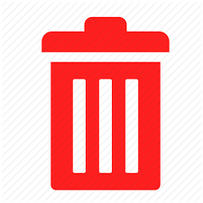

<form class="list-todo-container">
  <ul class="list-todo-content">
    <div class="empty-list" *ngIf="listToDo && listToDo.length > 0">
      Não há tarefas no momento!
    </div>
    <li class="list-todo-item">
      <div class="task-description">
        <p>teste</p>
      </div>

      <div class="task-status-buttons-container">
        <input type="radio" name="radio" id="todo" class="button-radio option-input checkbox">
        <label for="todo">todo</label>
      </div>
      <div class="task-status-buttons-container">
        <input type="radio" name="radio" id="inprogress" class="button-radio option-input checkbox">
        <label for="inprogress">in progress</label>
      </div>
      <div class="task-status-buttons-container">
        <input type="radio" name="radio" id="done" class="button-radio option-input checkbox">
        <label for="done">done</label>
      </div>

      <div class="trash-can-icon">
        
      </div>
    </li>
  </ul>
</form>